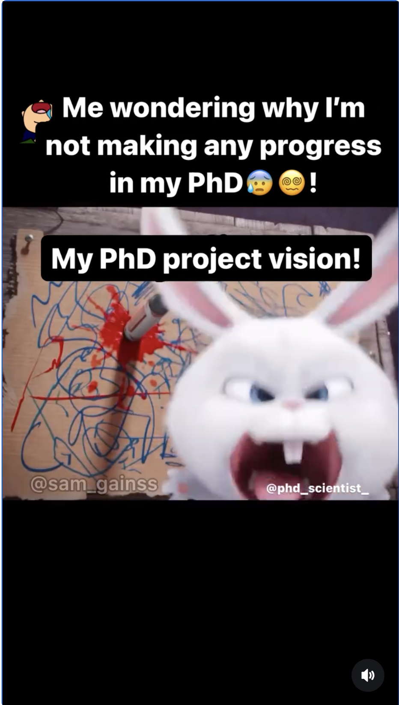
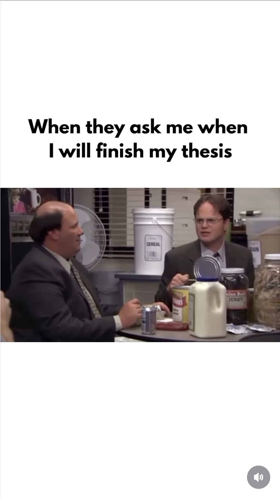
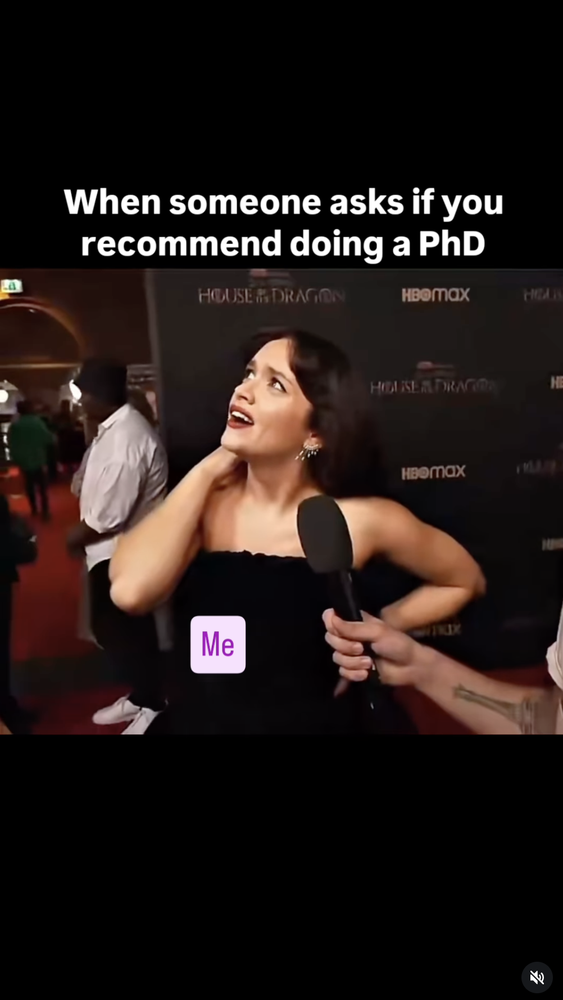
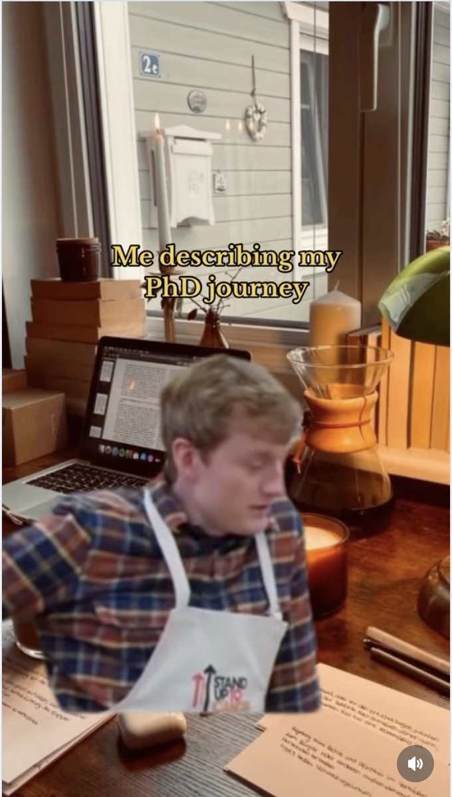

You found the secret page! This is the non-academic side of things.

My PhD project vision

When they ask me when I will finish my thesis

When someone asks if you recommend doing a PhD

Me describing my PhD journey